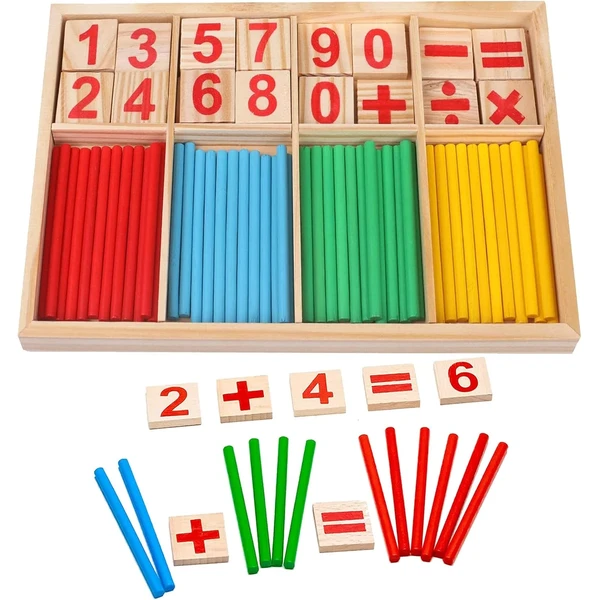
Bloques y palos de conteo
Set de bloques y palos de colores para practicar el conteo y los primeros conceptos matemáticos de forma manipulativa. Un material versátil que también sirve para clasificar por colores y formas.
⭐ ¿Por qué nos gusta?
- ✔ Combina bloques y palos de conteo.
- ✔ Colores vivos que facilitan la clasificación.
- ✔ Madera natural resistente al uso diario.
💬 Lo que más destacan las familias
Las familias destacan la cantidad de piezas del set y que da para muchas combinaciones de juego distintas.
Edad recomendada: 4-6 años
Ver en Amazon
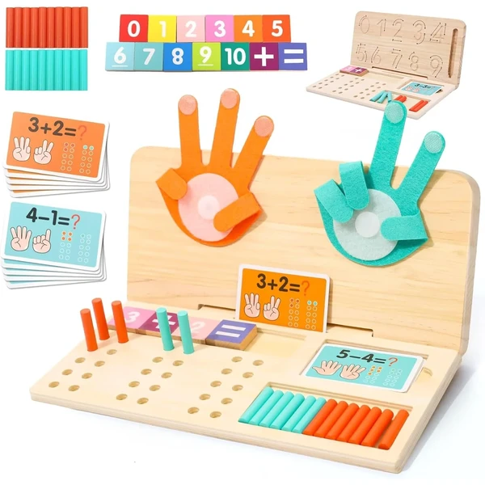
Set matemático 3 en 1 Wdmiya
Juguete educativo 3 en 1 con tableros de doble cara pensado para practicar matemáticas y coordinación siguiendo el método Montessori. Varias formas de juego en un mismo material.
⭐ ¿Por qué nos gusta?
- ✔ Tableros de doble cara con distintas actividades.
- ✔ Diseñado siguiendo el método Montessori.
- ✔ Favorece la coordinación y el cálculo.
💬 Lo que más destacan las familias
Se valora que combine varias actividades matemáticas en un mismo tablero, ideal para ir alternando ejercicios.
Edad recomendada: 4-6 años
Ver en Amazon
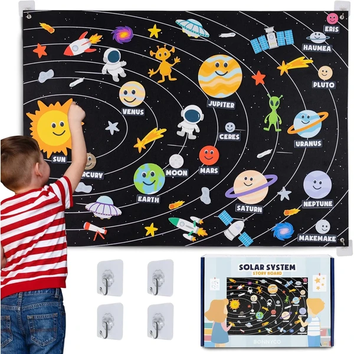
Sistema solar de fieltro BONNYCO
Panel sensorial de velcro con los planetas, el Sol, la Luna y los planetas enanos en fieltro, con sus nombres en inglés. Una forma manipulativa de acercarse a la astronomía colocando cada pieza en su lugar.
⭐ ¿Por qué nos gusta?
- ✔ Incluye los 13 planetas, el Sol y la Luna.
- ✔ Panel grande de velcro, fácil de manipular.
- ✔ Introduce vocabulario en inglés de forma visual.
💬 Lo que más destacan las familias
Es uno de los materiales de ciencia más comentados por su tamaño y por lo bien que aguanta el uso repetido de las piezas de velcro.
Edad recomendada: 4-6 años
Ver en Amazon
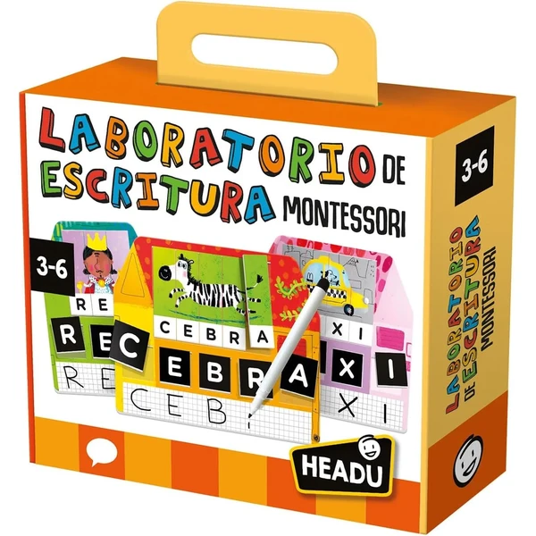
Laboratorio de escritura Headu
Juego Montessori con dieciocho puzles, tres casas y mini pizarras blancas para acompañar los primeros pasos hacia la lectura y la escritura a través de pictogramas.
⭐ ¿Por qué nos gusta?
- ✔ Combina puzles con pizarras para practicar.
- ✔ Pictogramas que apoyan el desarrollo del lenguaje.
- ✔ Incluye instrucciones detalladas para guiar el juego.
💬 Lo que más destacan las familias
Las familias destacan que es un buen puente hacia la lectoescritura, con actividades variadas para no repetir siempre lo mismo.
Edad recomendada: 4-6 años
Ver en Amazon
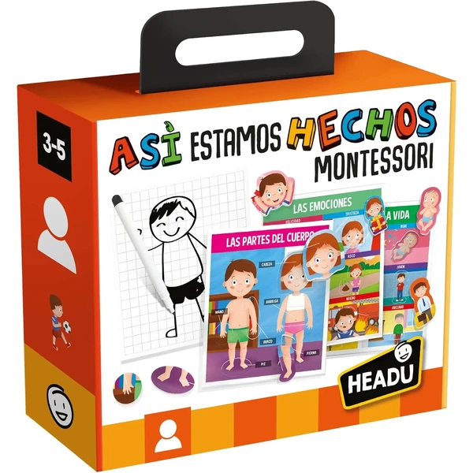
Juego del cuerpo humano Headu
Juego educativo sobre el cuerpo humano con ocho actividades distintas para reconocer partes del cuerpo, expresiones y emociones, favoreciendo la autonomía siguiendo el método Montessori.
⭐ ¿Por qué nos gusta?
- ✔ Ocho actividades distintas sobre el cuerpo humano.
- ✔ Trabaja también el reconocimiento de emociones.
- ✔ Formato compacto, fabricado en Italia.
💬 Lo que más destacan las familias
Se valora que combine el aprendizaje del cuerpo humano con el reconocimiento de emociones en un mismo juego.
Edad recomendada: 4-6 años
Ver en Amazon
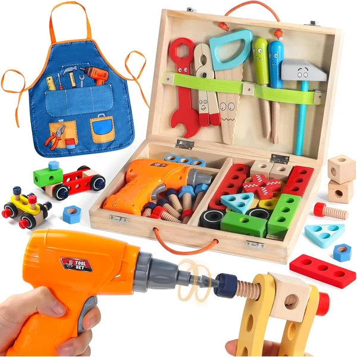
Caja de herramientas de madera
Caja de herramientas de juguete que se convierte en banco de trabajo, con piezas para atornillar y distintos niveles de dificultad. Favorece la motricidad fina imitando tareas de bricolaje reales.
⭐ ¿Por qué nos gusta?
- ✔ Se convierte en banco de trabajo portátil.
- ✔ Varios niveles de dificultad según crece el niño.
- ✔ Imita herramientas reales de forma segura.
💬 Lo que más destacan las familias
Las familias destacan que mantiene entretenido al niño durante bastante tiempo gracias a los distintos niveles de reto.
Edad recomendada: 4-6 años
Ver en Amazon
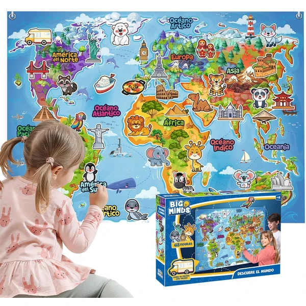
Mapamundi de fieltro Big Minds
Panel de fieltro con el mapa del mundo en español, con cuarenta y ocho piezas entre continentes, océanos y una figura para señalar ubicaciones. Despierta la curiosidad por la geografía de forma visual y manipulativa.
⭐ ¿Por qué nos gusta?
- ✔ Mapa completo en español, con 48 piezas.
- ✔ Panel grande, también decorativo.
- ✔ Favorece la motricidad fina y la geografía.
💬 Lo que más destacan las familias
Se valora el tamaño del panel y que sirva también como elemento decorativo además de material de aprendizaje.
Edad recomendada: 4-6 años
Ver en Amazon
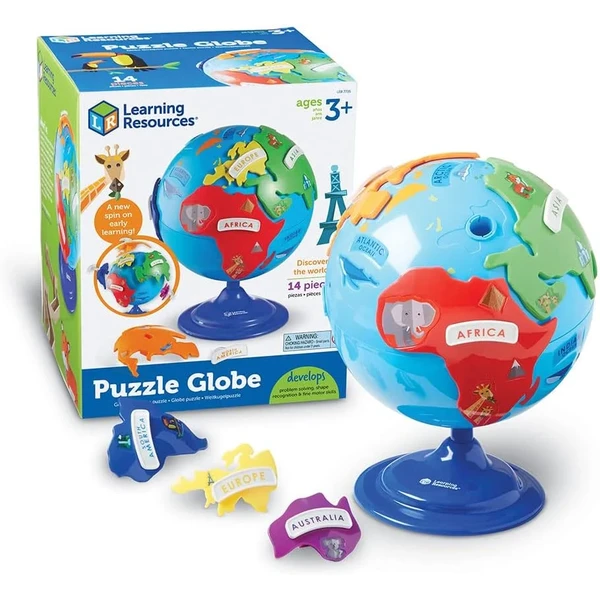
Globo terráqueo puzle Learning Resources
Globo terráqueo de veinte centímetros con piezas de continentes en relieve que se pueden desmontar y volver a colocar. Un material clásico Montessori para aprender geografía de forma táctil.
⭐ ¿Por qué nos gusta?
- ✔ Continentes en relieve para comprobar al tacto.
- ✔ Gira 360° para explorar cada zona.
- ✔ Incluye guía multilingüe y bolsa de piezas.
💬 Lo que más destacan las familias
Es uno de los materiales de geografía más comentados, tanto por la calidad del globo como por lo bien pensadas que están las piezas.
Edad recomendada: 4-6 años
Ver en Amazon
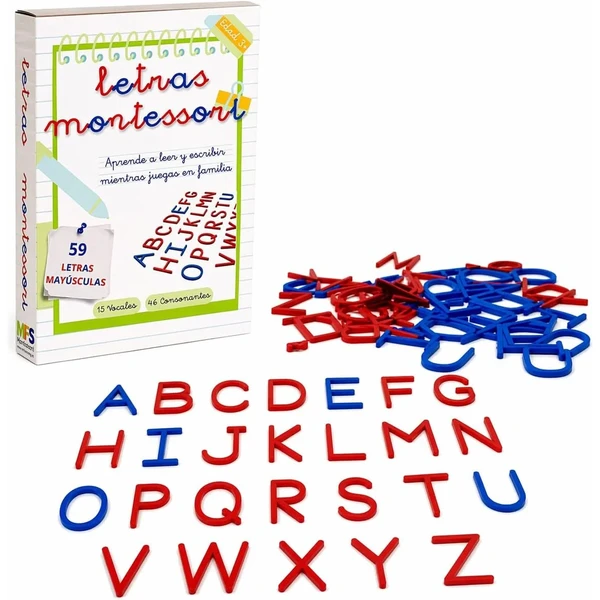
Alfabeto Montessori mayúsculas completo
Set completo de letras mayúsculas con varios juegos de vocales y consonantes, pensado para practicar la formación de palabras siguiendo el método Montessori.
⭐ ¿Por qué nos gusta?
- ✔ Varios juegos de vocales y consonantes.
- ✔ Suficientes piezas para formar palabras completas.
- ✔ Material pensado para un uso escolar continuado.
💬 Lo que más destacan las familias
Las familias destacan tener suficientes piezas para formar varias palabras a la vez, sin quedarse sin letras a mitad de juego.
Edad recomendada: 4-6 años
Ver en Amazon
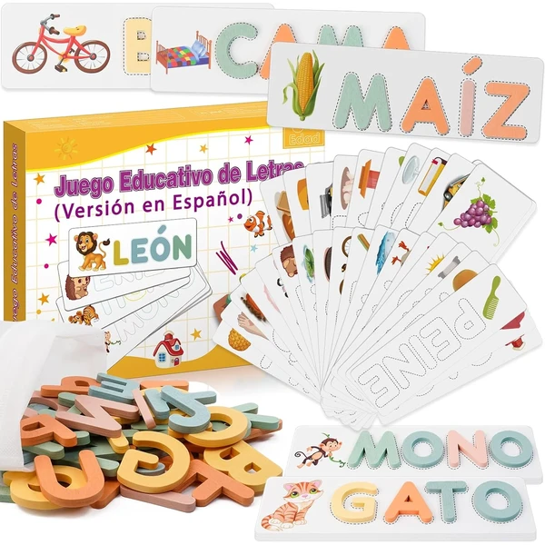
Scrabble español Montessori
Juego de ortografía con tarjetas de palabras e imágenes a juego, tipo scrabble en español, pensado para practicar la lectura y la formación de palabras de forma manipulativa.
⭐ ¿Por qué nos gusta?
- ✔ Formato tipo scrabble para formar palabras.
- ✔ Tarjetas con imagen y palabra a juego.
- ✔ Favorece la lectura y la ortografía temprana.
💬 Lo que más destacan las familias
Se valora que el formato tipo scrabble haga que practicar ortografía resulte más un juego que una tarea.
Edad recomendada: 4-6 años
Ver en Amazon
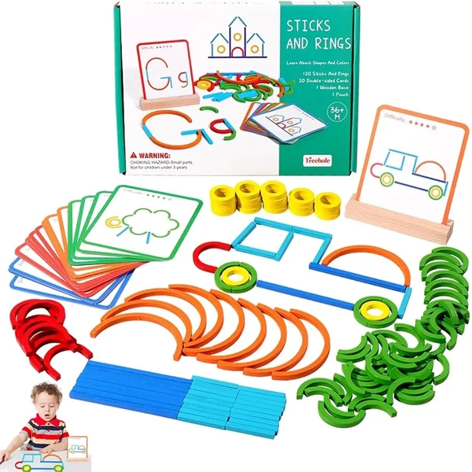
Tangram y construcción 120 piezas
Set de ciento veinte piezas que combina tangram con palos y anillos para construir, seguir patrones y formar figuras. Un material versátil para practicar geometría y creatividad.
⭐ ¿Por qué nos gusta?
- ✔ Combina tangram con piezas de construcción.
- ✔ Ciento veinte piezas para muchas combinaciones.
- ✔ Favorece la geometría y el pensamiento lógico.
💬 Lo que más destacan las familias
Es de los sets más comentados por la cantidad de piezas y por lo bien que combina el tangram con la construcción libre.
Edad recomendada: 4-6 años
Ver en Amazon